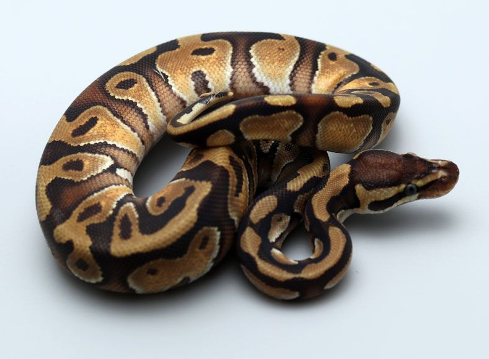
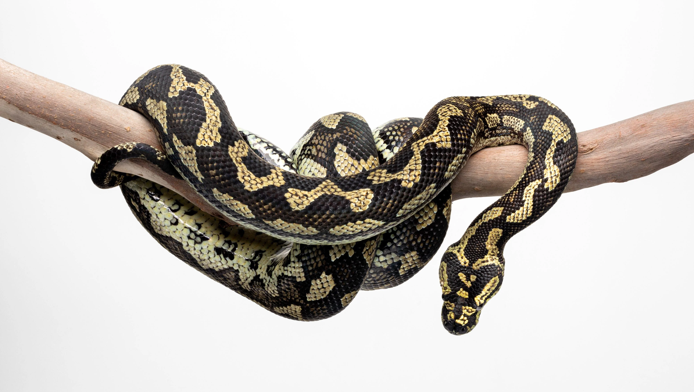
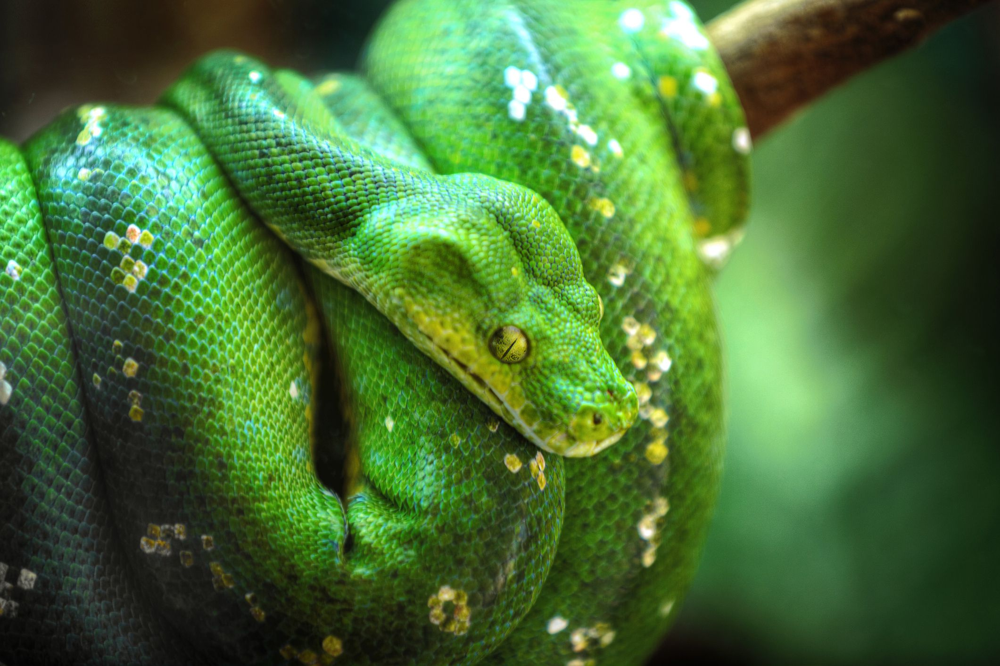
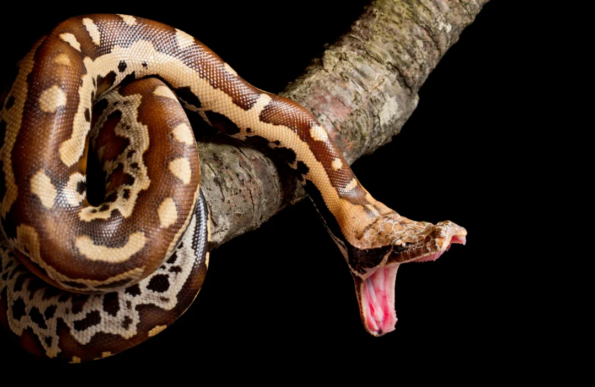

Püütonid on suured mittemürgised ahendavad maod, mis elavad Aafrika, Aasia ja Austraalia troopilistes piirkondades. Tänu oma elegantsele värvile, suhtelisele rahulikule käitumisele ja tagasihoidlikkusele on need loomad eksootiliste lemmikloomade fännide seas üsna od. Kuid nagu kõigi kodutamata loomade puhul, nõuab püütoni omamine erikohtlemist ning soovitame kõigil, kes kaaluvad lemmikloomapüütoni hankimist, põhjalikku seotud teabe uurimist.
Populaarseimad püütoniliigid lemmikloomadena

-

Suurus: emane keskmine 1.2 m, isane 0.7 m
Eluiga: u 30 aastat
Iseloom: Rahulik ja kergesti käsitletav, ideaalne algajatele.
-

Suurus: keskmine 4.9 m
Eluiga: 20–25 aastat
Iseloom: kuulekas, kuid nõuab palju ruumi ja hoolt.
-

Suurus: keskmine 2.1 m, emased võivad kasvada 2.8 m pikkuseni
Eluiga: 15–20 aastat
Iseloom: Aktiivne ja uudishimulik, korralikult sotsialiseerituna üldiselt rahuliku käitumisega, kipub vanuse ja käsitsemisega leevenema.
-

Suurus: keskmine 1.2 m, emased võivad kasvada 1.6 m pikkuseni
Eluiga: keskmiselt 15 aastat
Iseloom: Võib olla kaitsev, eriti alaealistena, ja võib stressi korral lüüa. Algajatele ei sobi.
-

Suurus: keskmine 1.5 m
Eluiga: 20-25 aastat
Iseloom: üsna aeglane, kuid võib olla kaitsev ja aggressiivne, korraliku käsitsemise korral võib muutuda rahulikuks.
Nõuanded
Püütoni pidamine
| Teema | Nõuanded |
|---|---|
| Terraarium | Peaks olema avar täiskasvanud püütonile (minimum 1,2 x 2,4 m). Kaasa uurimiseks kaunistusi ja väldi kahe püütoni koos majutamist. |
| Temperatuur ja niiskus | Kõige külmemas nurgas ei tohi temperatuur olla alla 26 °C, kõige soojemas – kuni 32–36 °C. Püütonile sobiv tausttemperatuur on umbes 28 °C. Optimaalne õhuniiskus on 80–90%. |
| Välk | Maod ei vaja täisspektri/UV välku, selle saab paigaldada, kuid parem on ööseks välja lülitada. Veendu, et madu ei puutuks lambipirniga otse kokku. |
| Puhastamine | Terraariumi ja dekoratsioone tuleks puhastada iga paari päeva kuni kord nädalas, kasutades pehmet seepi, söömata toit tuleks eemaldada iga päev. |
| Substraat | On eelistatud spetsiaalne roomajate vaipkate, paberrätikud, ajaleht, võib kasutada dekoratiivpinnast (st hakitud küpress, kuusekoor) Vältida tuleb puitlaastu, niiskust hoidvaid materjale (sammal). |
Püütoni toitmine
Külmutatud röövsaak
- Ohutum ja parasiidivaba.
- Enne söötmist tuleks sulatada kuni 40°C, et see eraldaks soojuskiirgust.
- Väiksem madu vigastamise oht.
Elus röövsaak
- Madu kohaneb elusa saagiga kiiremini.
- Võib kanda parasiite või baktereid.
- Elus saakloom võib madu vigastada.